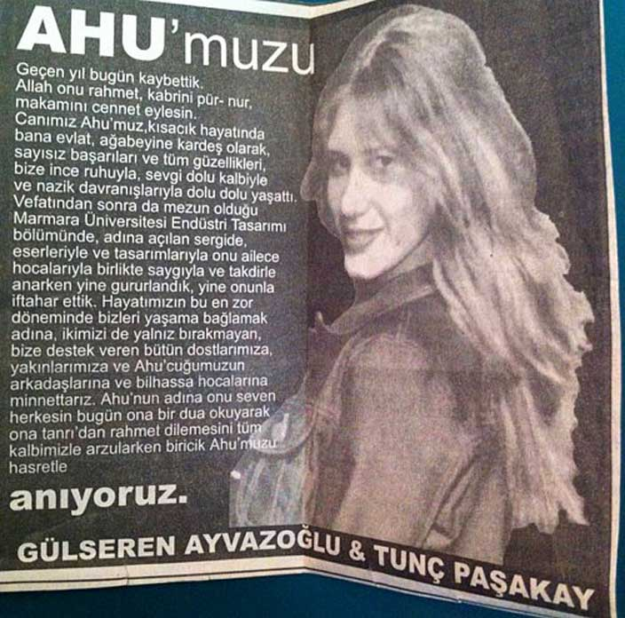

| Eski Köprünün Altında” isimli albümle hayatımıza giren, Duman grubunun solisti Kaan Tangöze’nin trajedi dolu aşk hikayesi.Duman grubunun ilk albümü “Eski Köprünün Altında” çıktığı zaman Ahu Paşakay ve Kaan Tangöze’nin ilişkisi uzun bir süredir devam ediyordu. Hatta Paşakay, Köprüaltı klibinde oynamıştı. Duman grubu o dönemde o kadar popüler olmamasına rağmen Kaan ve Ahu’nun büyük aşkını o dönemde bilmeyen yoktu. Tangöze‘nin Amerika’da olduğu ve henüz Duman grubunun kurulmadığı zamanlarda bile Ahu ve Kaan sık sık Amerika’da da bir araya gelmiş. Her büyük aşkta olduğu gibi, mutlu oldukları zaman mutlulukları masallardaki gibi olan çiftin, kavga ettikleri zamanda kavgaları ve üzüntüleri ikisini de depresyona sürükleyecek kadar şiddetliymiş. Böyle zamanlarda Kaan, Ahu’ya yeni şarkılar yazarak gönlünü alırmış.Ahu Paşakay‘ın annesi ve babası boşandıktan sonra, Ahu içine kapanmaya başlamış. Güzel Sanatlar Fakültesi’nden mezun olmuş ve normalde derslerine çok önem veren bir öğrenciymiş. Ama o sırada yaşadığı duygu çöküntüsü, diplomasını bile almaya gitmemesine sebep olmuş. Aşkının büyüklüğü tartışmaya açık olmamakla birlikte, Kaan’la yaşadığı bu inişli çıkışlı ilişki, ruh halinin sürekli değişmesine sebep oluyormuş.Duman grubu ikinci albümü “Belki Alışman Lazım’ı çıkardığı zaman Kemancı Bar’da bir tanıtım konseri yapılmasında karar kılınmış. Grubun dönemin popüler mekanlarından biri olan Kemancı Bar’da ilk defa sahne alacağı gecenin sabahında Kaan ve Ahu kavga etmişler. Ama yine de bu kavganın sonucunda konsere gelmeme ihtimalini aklının ucuna bile getirmeyen Kaan Tangöze’nin gözleri tüm gece boyunca Ahu’yu aramış. Ahu’nun gönlünü almak için o güne kadar Ahu için yazdığı tüm şarkıları arka arkaya söylemiş. Kaan’ın tam “Bal” şarkısını söylediği sırada kulise haber gelmiş. Kırgınlık sebebiyle kalabalığın arkasından Ahu’nun kendisini izlediğini düşünen Kaan’a konser sırasında hiçbir şey söylenmemiş ve konser bitimi beklenmiş. Ahu Paşakay, o gece Kaan Bal şarkısını seslendirirken dolabın demirlerine kendini asarak intihar etmiş.İntihar haberini konser bitiminde alan Kaan Tangöze, 15 gün boyunca evinden hiç dışarı çıkmamış ve hiç kimseyle konuşmak istememiş, görüşmemiş. Bir süre sonra trajik olayla ilgili sevgilisi için söylediği tek şey ise “Yarışmadı, yenilmedi, açık seçik sizle oynamadı, gerilmedi” olmuş. Ah, Haberin Yok Ölüyorum, Köprüaltı, Senin Gibi, Oje, ,Kırmış Kalbini şarkılarını Ahu yaşarken Ahu’ya yazmıştı. Ölümünden sonra çıkardığı albümelerde de mutlaka Ahu’dan bir iz vardı. Kesin olarak bilinen Ahu’nun anısına yazılmış üç şarkı ise: Melek, Seni Kendime Sakladım ve Yanıbaşımdan. Kaan Tangöze için Ahu’ya yazdığı şarkılar arasında en önemlisi “Bal”’dı. Ahu’yla ilişkileri boyunca birbirlerine hep “Balım” diye hitap etmişler. Bunun da üstüne tam o şarkıyı seslendirirken Ahu’nun sessizce sonsuz bir yolculuğa çıkması Kaan’ı mahvetmiş. Kaan Tangöze, Kemancı Bar’da Ahu affetsin diye seslendirdiği Bal şarkısını bir daha seslendirmemeye ant içti. Bu olaydan uzun zaman sonra Açıkhava Tiyatrosu’nda seyircilerin yoğun ısrarı ve Bal diye tempo tutmasının üzerine, seyirciye arkasını dönen Kaan, gökyüzüne kollarını açarak ve ağlayarak şarkıyı son defa söyledi. |
Ahu Kimdir?
| DOĞUM TARİHİ: /3 Kasım 1976, İstanbul/ ÖLÜM TARİHİ VE YERİ: /20 Ekim 2002, Arnavutköy/ DEFNEDİLDİĞİ YER:/Edirnekapı Şehitlik Ve Mezarlığı, İSTANBUL EBEVEYNLERİ: Kaya Paşakay, Gülseren Ayvazoğlu/ |
YORUMLAR
| Pınar Özkal | Yorumumu beğenin de bildirim geldikçe dinliyim. |
| Ayşe Övünç | Şarkı çok güzel. |
| Umut Yılmaz | Hikayesi çok üzücü. |
| Aybüke Çukur | Herkesin hikayesi gözünü kapattığında canlanıyor. |